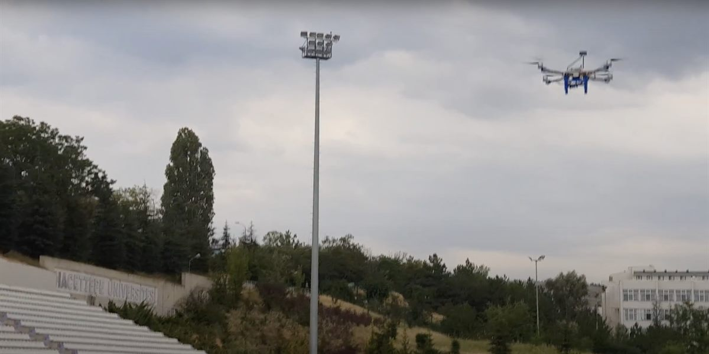
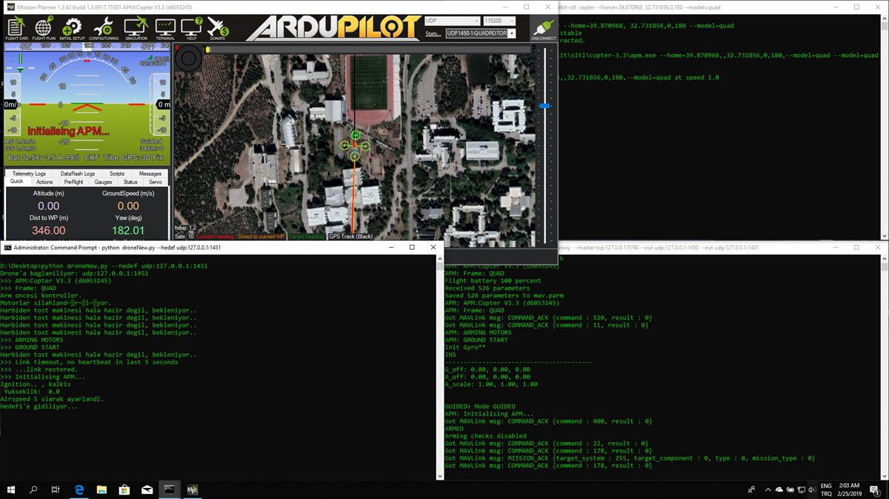

All posts
RoboticsHacettepe UAV Team
Autonomous UAV
Software for the Hacettepe University UAV team's autonomous mission flight, built for the TÜBİTAK UAV contest at TEKNOFEST 2019.
- Python
- C/C++
- OpenCV
- ArduPilot
- MAVLink

Hacettepe University's UAV club entered the TÜBİTAK unmanned aerial vehicle contest at TEKNOFEST 2019 with a drone that had to fly its mission on its own. This was the software side of it, as the team's software lead.
How it fit together
- A Linux single-board computer on board, talking to the flight controller and a separate microcontroller for the sensors.
- Sensor and camera data processed on the fly, with OpenCV for the image side.
- The mission script in Python, talking to the flight controller over MAVLink; C and C++ alongside it.
- Flights rehearsed first in ArduPilot's simulator (SITL) with Mission Planner, then on the field.

The repository holds early and mid-stage code and experiments. The final flight code belongs to the team and stays private.